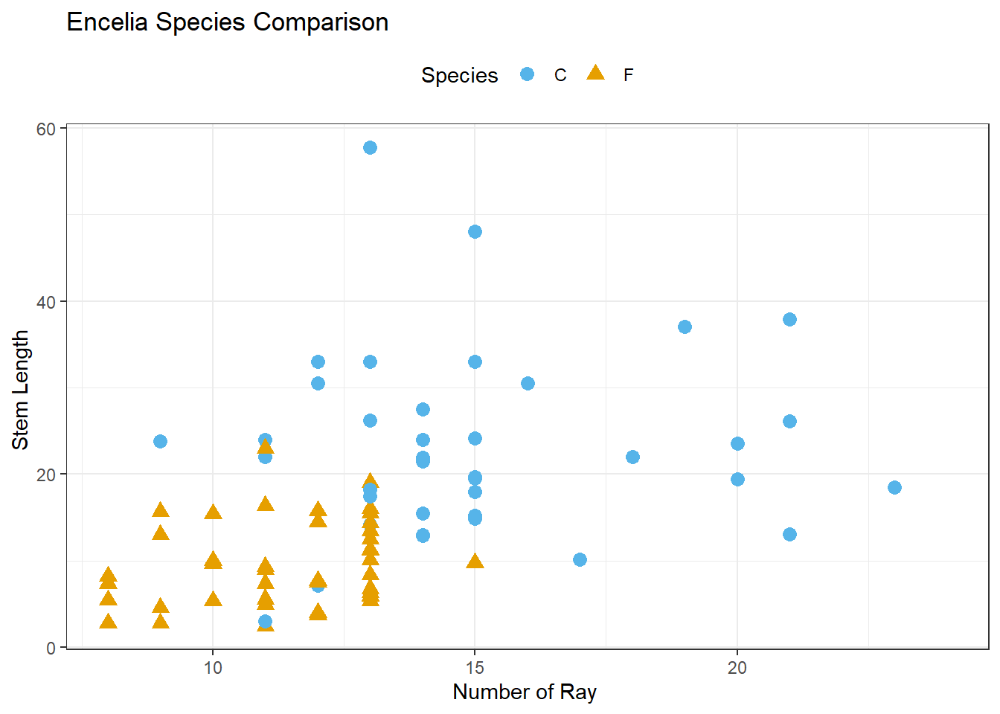
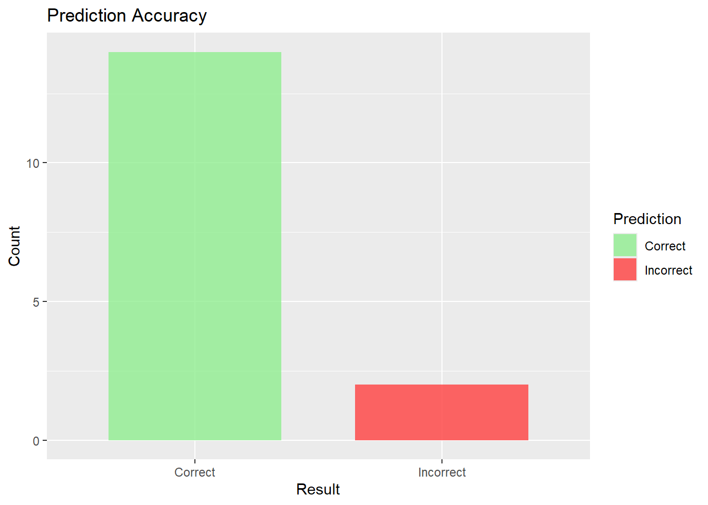

| Packages Project | |
|---|---|
| Package | Use |
| here | to easily load and save data |
| readr | to import the CSV file data |
| dplyr | to massage and summarize data |
| gt | to create nice-looking and informative graphs |
| rsample | to split data into training and test sets |
| purrr | to run the cross-validation |
| tidyr | to pivot the data frames |
| patchwork | combine plots |
| broom | Make predictions on models |
Encelia Flower Project
Motivation and Context
The Encelia californica and Encelia farinosa are both flowers grown in the Fullerton Arboretum. Although they look similar at a distance they have distinct differences that make them separate species of flower. In botany which is the study of plants it is very important to know which plant you are looking at, so you know its properties and how it works. Knowing the difference between plants especially these two is also very important for anyone who would want to care for/ grow a garden. These plants are grown in different regions and require differing levels of heat, sunlight, and nutrients to properly grow. If a plant isn’t properly cared for it can die or not grow to its full potential.
Main Objective
The goal of this data science project is to make a model that can predict which species of Encelia is being observed when given easily measurable things such as the flower’s number of rays, ray diameter, disk diameter and stem length.
Packages Used In This Project
Design and Data Collection
To collect the data, my classmates and I went to the Fullerton Arboretum, then took measurements from Encelia californica and Encelia farinosa flowers. We took measured the number of rays, ray diameter, disk diameter ,and stem length from 48 Encelia californica flowers and 52 Encelia farinosa flowers. The values were measured twice for added accurary, There was some missing data on our flowers though, as some of the stem length values weren’t collected for some flowers. The biggest issue in this case with data collection was communication what was being observed.and recorded. Another person doing a similar project may have chosen a different unit of measure or different variables which would produce a different model than the ones I made.
Minor Data Wrangling
flower<-flower|>
mutate(Species=Species|>
as.factor())
contrasts(flower$Species)The only data wrangling that needed to be performed on the data set was turning my species of flower variable from a character variable to a numeric. There are only two types of species we are looking at in the data set, Encelia californica which is named C, corresponding to a 1 , numerically, and Encelia farinosa which is an F, corresponding to 0.
Training-Test Split
set.seed(14)
flower_split <- flower |>
initial_split( strata= Species,
prop=0.80
)
flower_train<- training(flower_split)
flower_test <- testing(flower_split)Here we made the testing/training split for our data set. The split is important so that the models we train can be made on training data, not having access to the testing data. The testing data is only using to benchmark or test how our models fit to new, unknown data. Using a seed for our split is also important so our model is repeatable , and doesn’t keep changing.
Exploratory Data Analysis
plot1<-ggplot(
data=flower_train,
mapping=aes(x=number_rays,y=Species)
) +geom_jitter(height=0.1)
plot2<-ggplot(
data=flower_train,
mapping=aes(x=disk_diameter,y=Species)
) +geom_jitter(height=0.1)
plot3<-ggplot(
data=flower_train,
mapping=aes(x=ray_diameter,y=Species)
) +geom_jitter(height=0.1)
plot4<-ggplot(
data=flower_train,
mapping=aes(x=stem_length,y=Species)
) +geom_jitter(height=0.1) (plot1+plot2+plot3+plot4)
For my exploratory data analysis, I made 4 scatter plots, with each comparing the 2 species based on each of the 4 variables measured. We can see the californica has larger stem lengths and a higher number of rays than the farinosa in many cases. With disk diameter and ray diameter also being noticeably larger. I then continued by making a scatter plot comparing the two species by number of rays and stem length With this scatter plot showing a better picture of what my previous scatter plots were showing. With multiple cases where the californica either has more rays and or stem legnth than the farinosa.
ggplot(flower, aes(x = number_rays, y = stem_length,
color = Species, shape = Species)) +
geom_point(size = 3) +
scale_color_manual(values = c("F" = "#E69F00", "C" = "#56B4E9")) +
labs(title = "Encelia Species Comparison",
x = "Number of Ray ",
y = "Stem Length ") +
theme_bw() +
theme(legend.position = "top")
Modeling
set.seed(453)
flower_cv<-flower_train|>
vfold_cv(
v=5,
repeats=3
)Starting off my Modeling I divided my training set into 5 folds , with 3 repeats each to eliminate any randomness in my models and make them more stable.
flower_pred <- function(split){
train<-analysis(split)
valid<-assessment(split)
flower_allglm <- glm (
Species~disk_diameter + number_rays + ray_diameter + stem_length,
data= train,
family = "binomial"
)
flower_3glm <- glm (
Species~disk_diameter + number_rays + ray_diameter,
data= train,
family = "binomial"
)
flower_2glm <- glm (
Species~stem_length + number_rays,
data= train,
family = "binomial"
)
flower_1glm <- glm (
Species~ number_rays,
data= train,
family = "binomial"
)
flower_nullglm <- glm (
Species~1,
data= train,
family = "binomial"
)
valid_pred <- valid|>
mutate(
pred_all= predict(flower_allglm, newdata=valid, type = "response" ),
pred_null= predict(flower_nullglm, newdata=valid, type = "response" ),
pred1= predict(flower_1glm, newdata=valid, type = "response" ),
pred2= predict(flower_2glm, newdata=valid, type = "response" ),
pred3= predict(flower_3glm, newdata=valid, type = "response" )
)
}Continuing on, I created a prediction function for my flower species, which checks logistic regression models using cross validation. Then I fit 4 models using the function . The 4 models I chose were a model using all the variables, a null model meaning just predicting one species or the other, a model using each variable other than stem length and a model using stem length and number of rays since my exploratory data analysis show some kind of relationship between them.
mapped_pred<- map(
flower_cv$splits,
flower_pred
)
mapped_pred_df <- mapped_pred |>
bind_rows(.id = "folds")
mapped_pred_df|>
select(folds,Species,pred1,pred2,pred3,pred_null,pred_all)Since I had all my models, I used the map function make general predictions from the models across my folds. Bind rows to make each row a fold, making my predictions a data frame. Then using the select function I took out everything but my fold numbers, species types and prediction columns.
pred_comb<- mapped_pred_df |>
pivot_longer(
cols = starts_with("pred"),
names_to = "model",
values_to = ".pred_C"
) |>
mutate(
.pred_F = 1 - .pred_C
)
pred_comb|>
select(
Species, model, folds, .pred_F, .pred_C
)Here I used pivot longer to combine together my model probability of a flower being a californica, then I used mutate to add a column with each model’s probability of a flower being a farinosa by subtracting 1 from the californica probability, Finally I selected out my probability columns, species, and folds from this data frame.
brier_all_models <- pred_comb |>
group_by(model, folds) |>
brier_class(
truth = Species,
.pred_F
)
brier_all_models |>
ungroup() |>
group_by(model) |>
summarise(
mean_brier = mean(.estimate),
se_brier = sd(.estimate) / sqrt(4) # 4 estimates (from 4 folds)
) |>
arrange(mean_brier)Since I got my probabilities, I then grouped my data by model and fold to calcuate my brier scores, and the standard error of my brier scores.
| Brier Score Comparisons | ||
|---|---|---|
| Model | Brier Score | Standard error |
| pred_all | 0.05570499 | 0.016311460 |
| pred2 | 0.07756403 | 0.018644748 |
| pred3 | 0.14437497 | 0.032917368 |
| pred1 | 0.18180586 | 0.029404381 |
| pred_null | 0.25403577 | 0.004402525 |
Since our all model, which uses all variables, has the lowest brier score and standard deviation of brier score it is the most correct model that we have made, so we will use it as our final model and check it against our test data.
# label: fit final model
flower_final_glm <- glm(
Species ~ disk_diameter + number_rays + ray_diameter + stem_length,
data = flower_train,
family = "binomial"
)flower_class_predictions <- flower_final_glm |>
augment(newdata = flower_test, type.predict = "response") |>
mutate(
.pred_F = .fitted,
.pred_C = 1 - .pred_F,
.pred_class = if_else(.fitted >= 0.5, "F", "C") |>
as.factor()
)
flower_class_predictions<-flower_class_predictions |>
select(Species, .pred_class, .pred_F, .pred_C)Once again fitting my all variable model, I used the augment function to test it against the test data it hasn’t had access to until this point.
Insights
# label: get confusion matrix
flower_class_predictions |>
conf_mat(
truth = Species,
estimate = .pred_class
) Truth
Prediction C F
C 6 1
F 1 8Looking at the confusion matrix, which compares the predicted species to the actual species, the model performs fairly well. With 14 correct predictions and 2 incorrect predictions. In this case 5 flowers from our data set were withheld from this since they don’t have all the variables present for the model to predict.
flower_class_predictions2 <- flower_class_predictions |>
mutate(
Nspecies=as.numeric(Species),
Npred=as.numeric(.pred_class),
)
flower_class_predictions2<-flower_class_predictions2 |>
mutate( score = Nspecies - Npred)
flower_class_predictions2<-flower_class_predictions2 |>
drop_na()
flower_class_predictions2<-flower_class_predictions2|>
mutate(
Correct_If = case_when(
score == 0 ~ "Correct",
score < 0 ~ "Incorrect",
score > 0 ~ "Incorrect",
)
)To better visualize, how well my model did I made 2 new columns in my final prediction data set. I made score, which is the subtraction of the actual species and the predicted species. I used mutate to categorize these. If the score is zero the prediction is correct, if it is not zero (-1 and 1) then the prediction is wrong. I plotted the number of correct and incorrect predictions below on a bar graph. It shows as previously stated, the final model we chose works very well at predicting flower species.
flower_class_predictions2 |>
ggplot(aes(x = Correct_If, fill = Correct_If)) +
geom_bar(alpha = 0.8, width = 0.7) + # Adjust transparency and bar width
labs(
title = "Prediction Accuracy",
x = "Result",
y = "Count",
fill = "Prediction" # Better legend title
) +
scale_fill_manual(
values = c("Correct" = "lightgreen", # Light green (hex code)
"Incorrect" = "brown1" # Soft red
),
labels = c("Correct", "Incorrect") # Ensures proper legend labels
)